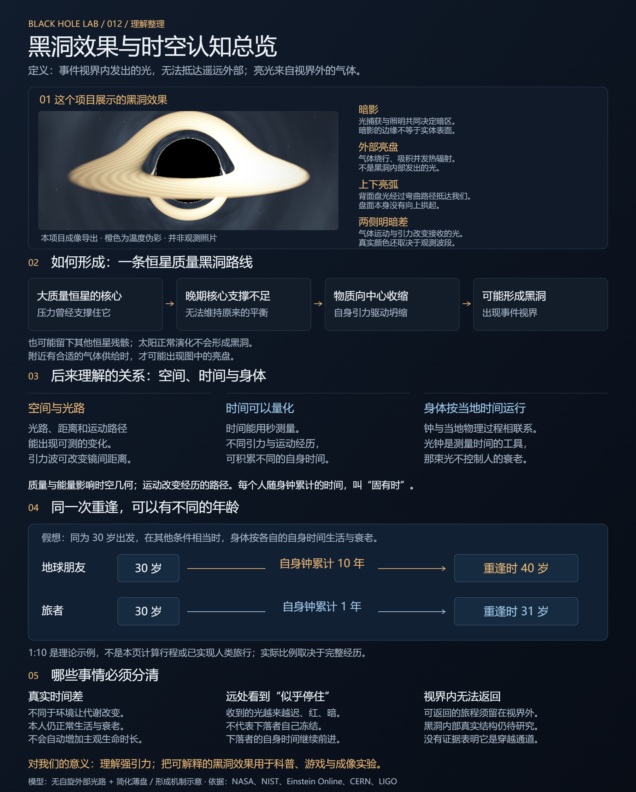
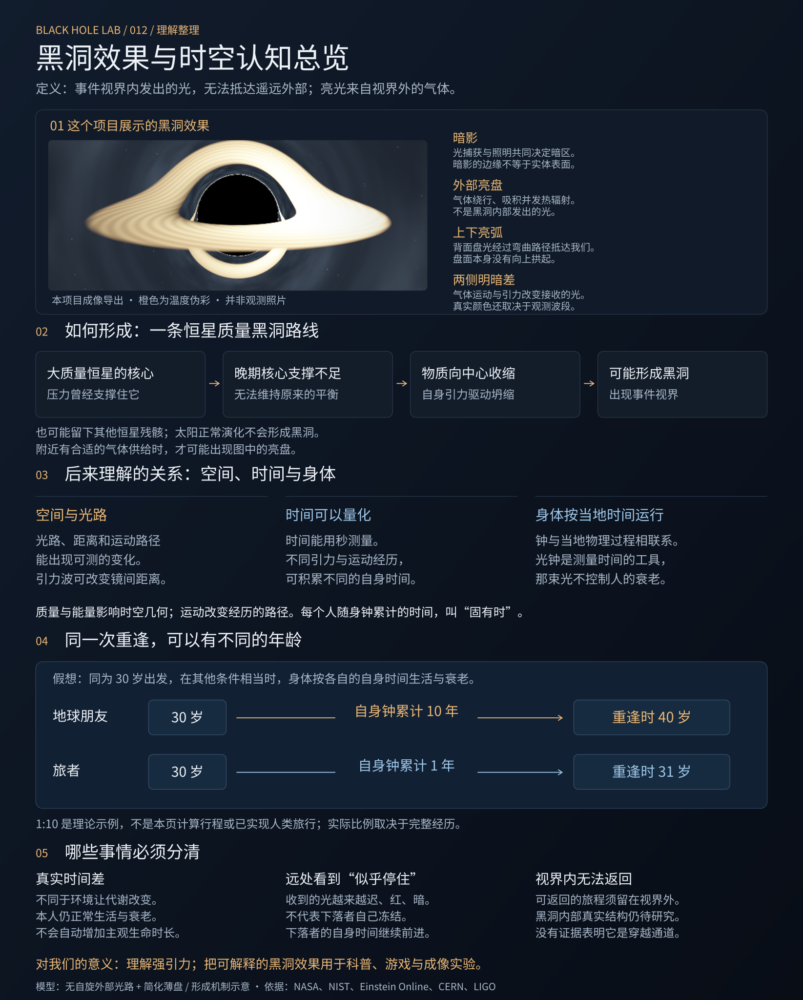

亮光来自外部气体，亮弧来自光路。
有气体供给时，物质可能绕行成盘、吸积并发热。盘背面的光经过弯曲路径到达我们，形成上下亮弧；气体运动和引力频移共同影响颜色与亮度。暗区由光捕获与照明共同决定，不能把整片黑色都当成视界表面。
回到完整黑洞效果 →BLACK HOLE EFFECTS · OUR UNDERSTANDING
这项研究从一段游戏黑洞 Shader 展示出发。我们独立实现可操作的成像效果，再沿着“黑洞是什么 → 如何形成 → 为什么这样看见 → 时间与身体为何有差异”逐步解释。
已有内容：吸积盘、光捕获、弯光与频移对照；10 章 / 30 段、约 13 分 3 秒的 MiniMax 中文旁白；完整讨论总结、科学依据与研究沿革。
理解要点：亮光来自黑洞外部气体；真实年龄差来自各自经历的固有时，不能把远处影像变慢当成人体暂停。
用途与边界：适合科普、展览与游戏效果研究。形成含机制示意，成像采用无自旋外部模型；未模拟内部、完整恒星坍缩或人体旅行。

直接打开自由实验：旋转、缩放、调整参数，保存画面。
02 / 边看边听播放完整中文讲解 →从定义与恒星支撑讲起，到塌缩、成盘、发光与成像。
03 / 整理认知时空、时间与寿命 →阅读我们讨论后的总结，区分真实时间差、身体变化和光学现象。
04 / 一张图看全放大原有总览图 ↗串起现象、形成、固有时、年龄对照与认知边界。下方可下载原图。
05 / 动手核对原理与因果对照 →分别关闭弯光、运动频移或盘光，检查哪个原因改变了画面。
06 / 全部资料完整理解与研究档案 ↗阅读全文、计算假设、旁白说明、历史版本、来源及验收记录。
时空与光钟交互实验 ↗ · 下载总览 PNG · 下载可编辑 SVG · 下载完整中文旁白 · 使用场景与扩展 · 原帖与科学依据
FROM COLLAPSE TO WHAT WE SEE
边看边讲：先认清结果，再演示支撑失效、收缩与光的因果边界。
把真实光路、外部热气体与最终图像连接起来。
它是存在事件视界的时空区域：视界内发出的光无法到达遥远外部。我们看见的亮光，来自视界外的物质。
已预录 10 章 / 30 段完整旁白
10 M☉ · Rₛ 29.53 km
计算预算不足的极少数光路以紫色标出，避免将其误当成阴影。
当前：可见光黑体谱 + 曝光映射；主辐射峰通常不在可见光。
试试关闭「引力透镜」：上下的弧线会消失，发光物质恢复成一张平面的盘。
被捕获的光线不会抵达观察者
发光的气体绕中心流动
看见黑洞背面的盘与星空
运动方向改变观察到的亮度
VISUAL EFFECT → PHYSICS → OUR UNDERSTANDING
这个项目先展示黑洞外部的成像效果，再解释形成与发光机制。下面把我们继续讨论的时空、时间差、身体衰老和实际意义整理到一起。
画面展示黑洞暗影、外部亮盘、背面亮弧与两侧明暗差。
延伸理解为什么会形成黑洞；时间怎么测；真实年龄差怎样产生；哪些事仍然未知。
逐步看地点与时刻，比较不同半径的理想静止时钟，再看视界内外的光路。
沿用讨论中的交互图 / 02光钟与身体衰老的关系 →播放光往返，观察高速运动下不同的累计时间。光钟测量时间，不是让人衰老的光源。

有气体供给时，物质可能绕行成盘、吸积并发热。盘背面的光经过弯曲路径到达我们，形成上下亮弧；气体运动和引力频移共同影响颜色与亮度。暗区由光捕获与照明共同决定，不能把整片黑色都当成视界表面。
回到完整黑洞效果 →事件视界内发出的光不能抵达遥远外部；当地光速仍是 c。视界没有坚硬的外壳，黑洞也不能仅理解为一块停止发光的压缩物质。缺少明亮吸积盘时，黑洞仍然存在。
看视界内外的光路 →大质量恒星晚期的核心可能失去足够的压力支撑。如果残留核心无法停止进一步收缩，就可能形成黑洞；也可能出现其他结局。页面选取一条形成路线，太阳的正常演化不会形成黑洞。亮盘并非每次成洞都会出现。
回放核心向内收缩 →空间距离可以测量，时间也可以用秒量化。质量与能量影响时空几何；光路可以偏折，物体可受潮汐拉扯。不同位置、不同运动经历的钟，比较时可能积累不同的时间。时空不需要等到黑洞出现才存在。
随身理想钟记录的时间叫“固有时”。身体里的物理过程也按这个当地时间进行。生活与健康条件相当时，实际只经历一年，就经历这一年的生理过程；远方可能已经过去更多年。光钟是测量时间的例子，那束光不控制人的衰老。
引力影响取决于质量和距离。假想以同质量黑洞替换太阳，地球轨道基本相同，却会失去阳光。研究黑洞能检验强引力物理；这个项目可用于科普、游戏与成像实验。导航也需校正地球引力与运动造成的钟差，这不来自黑洞。
继续看场景与扩展 →A THOUGHT EXPERIMENT · 理论示例
假想两个人同为 30 岁出发。选择一趟始终留在视界外、能够返回的旅程，使旅者的随身钟累计 1 年，地球朋友的钟累计 10 年。
| 比较 | 地球朋友 | 旅者 |
|---|---|---|
| 自己的钟记录 | 10 年 | 1 年 |
| 重逢时年龄 | 40 岁 | 31 岁 |
数字用于说明，不是本页计算的行程，也不是已经实现的人类旅行。比例由完整运动与引力经历决定；身体状况还受环境与健康影响。少衰老可以让你到达外界更遥远的未来，但不会自动增加自己能体验的生命时长。
两人的钟都记录一年，身体状态可能因生活或健康条件而不同。
重逢时，正常工作的钟累计不同的时长。即使生活条件相同，也可能有年龄差。
落向黑洞时，传来的光越来越迟、红、暗。本人不会因此冻结，自身时间继续前进。
有观测支持：原子钟实验测得引力时间效应，黑洞附近恒星的红移与轨道变化支持相对论模型；引力波也已经被探测。
仍待研究：黑洞内部物质和奇点的真实结构；没有证据证明黑洞是通往别处或过去的可用通道。越过事件视界后无法返回远处外界。
本页范围：形成与气体机制使用教学示意；外部成像采用无自旋黑洞光路与简化薄盘。参数对照、曝光、纹理速度和温度伪彩帮助观察，不能把它们当成完整恒星模拟或真实观测照片。
这份总结的用途：从一幅黑洞画面出发，看懂每个部位的原因，再理解引力怎样影响光、钟和人的经历。
NASA：黑洞结构 · NASA：质量与距离 · Einstein Online：固有时与钟 · Einstein Online：真实年龄差 · NIST：原子钟与 GPS · CERN：粒子衰变时间实验 · ESO：黑洞附近恒星的轨道 · LIGO：引力波探测
CAUSE → PROCESS → IMAGE
黑洞的形成、周围气体的发光、光传播后的影像分别回答不同问题。点击卡片可回到对应画面，继续同步讲解。
事件视界以内发出的光不能抵达遥远外部。视界是因果边界，不是黑色固体壳；当地测量的光速仍是 c。附近有没有亮盘，不改变它是不是黑洞。
看内外光路的区别 →大质量恒星晚期的核心可能失去足够的压力支撑，在自身引力下向中心收缩。如果无法停止进一步塌缩，就可能留下黑洞。外层可被爆炸抛出，也可回落；不是从内部向外扩散的塌陷。这里选的是一条形成路线。
回放向内收缩 →所选自由落体模型中，物质可在有限自身时间越过参考尺度。远方收到的光则越来越红、弱、迟，最终难以看见。这不表示物质真的永远停在边界上；你看到的是传来的信号。
一起看半径、时钟和信号 →附近气体带着角动量，先绕黑洞运动。耗散与冷却使气流趋向共同平面；磁应力、湍流等向外输运角动量，才让一部分气体逐渐向内吸积。图中的粒子和箭头用来解释机制。
看绕行和向内吸积 →气体向内吸积时，部分轨道能量经耗散转成热并辐射。默认薄盘模型的最高温度约 194.6 万 K，局部黑体峰值在软 X 射线；画面中的可见色和温度伪彩需要分开理解。
看温度与发光频段 →盘背面的光可绕过黑洞，从不同路径到达观察者，形成上下亮弧和变形影像。演示同时显示计算的光路与它产生的影像；改变视角，弧也会改变。
跟随光，再看亮弧 →光捕获和弯光形成黑洞阴影，其表观尺度不等于视界半径。薄盘影像中，没有接到发光气体的视线也会显暗。因此不能把整个暗洞都当成事件视界。
比较视界与所见影像 →气体朝向接收光的方向运动时，通常更亮、频率更高；远离一侧通常更暗。光离开强引力区域还会发生重力红移。实际颜色与亮度取决于温度、光路和观察频段。
比较频移与明暗 →塌缩可能留下黑洞；有气体时，它可能成盘并发光；弯光和频移把发出的光变成我们看到的影像。黑洞形成不是每次都伴随同样的亮盘，原图展示的是一种环境与视角。
回到完整结果，自由观察 →MASS & PHYSICAL SCALE
无自旋、无电荷的例子满足 Rₛ = 2GM/c²。这里调的是残留黑洞质量，不是出生时整颗恒星的质量；它会更新物理长度、时间与所选盘模型的温度。以 Rₛ 归一化后，同一几何的形状不随质量单位随意改变。
默认：光子球半径约 44.30 km；最内稳定圆轨道约 88.60 km。
保留相同盘面与视角，比较直线投影和弯光成像。亮弧的变化说明光路的作用；这是非物理对照，现实中的引力不会被关闭。
保留重力红移、盘面与视角，比较两侧接收光谱和亮度。暂停纹理运动能帮助你专注于这一变化。
移除外部盘面辐射，用背景星空与参考线观察光的偏折。气体是这幅图中的光源，事件视界决定哪些信号无法逃出。
页面计算所选零压力球对称边界的径向自由落体、视界内外的径向光线，以及无自旋黑洞外部的弯曲光轨道。主影像从相机逐像素反向追迹；气体的重力与运动频移共同决定接收到的光谱。
恒星压力箭头、气体聚集、角动量输运是机制示意。没有求解整颗恒星、爆炸、磁流体或动态视界；早期的 Rₛ 圈是对应质量的参考尺度。发光采用稳态、零力矩内缘的牛顿薄盘温度和局部黑体假设，并非任意真实吸积流都适用。
默认可见光模式把频移后的黑体光谱映射到可见波段颜色，并调节显示曝光。温度伪彩模式用暖色标表示温度与总辐亮度趋势，明确标注为伪彩。不能把橙色当成真实肉眼照片，也不能由显示色直接反推温度。
光线和光谱采用有限采样，高阶细环尤其容易受到数值误差影响。当前背景和盘面纹理为程序化显示，未模拟真实湍流、点源观测带通或完整辐射转移。进一步应校验收敛，再扩展相对论盘通量、自旋和真实观测数据。
NASA：视界、吸积盘与影像 · NASA：不同起源与类型 · NASA：直接塌缩 · Kunz：自由落体与视界光路 · Fromang & Lesur：角动量输运 · Shakura & Sunyaev：薄盘 · Bruneton：弯光与频移模型 · Wyman 等：可见颜色映射
FROM UNDERSTANDING TO USE
同步讲解适合科普与展览，实时成像也能进入游戏。继续扩展时，需要为新增物理与交互分别验证。
用于飞船航线的探索地标或关卡环境，让玩家改变位置观察光路和影像。实际引力玩法需加入飞船动力学。
下一步：场景物体成像、遮挡与飞船运动字幕跟随画面，把定义、塌缩、成盘、发光与成像连起来。回放和对照让观众检查每个原因产生的结果。
下一步：恒星结局分支、学习反馈与多语言旁白使用一键讲解、自由视角与画面导出，让观众先看懂现象，再动手观察。正式展出前需验证实机性能与语音资源。
下一步：多屏展示、传感器与离线讲解WHERE TO GO NEXT
加入白矮星、中子星与黑洞结局，展示质量损失、爆炸与回落。动态视界需使用新的时空模型。
让行星、恒星和飞船也参与成像，处理几何求交、遮挡、多重影像与不同光源。
先做步长和采样收敛，再加入相对论盘通量、Kerr 自旋、辐射转移与真实观测带通。
移植到游戏引擎或展览系统，接入摄像机、HDR 与交互输入，并用目标设备实测。
ORIGIN · SCIENCE · COMPLETE RECORD
原帖提供视觉起点，科学资料支持物理解释；本站的成像与教学代码独立实现。原作公开源码与许可未确认。
原作者的游戏视觉展示，是研究起点，并非本站源码。
讨论总结、科学关系、数值模型、完整旁白原稿、历史构造版本与验收证据都可查阅。